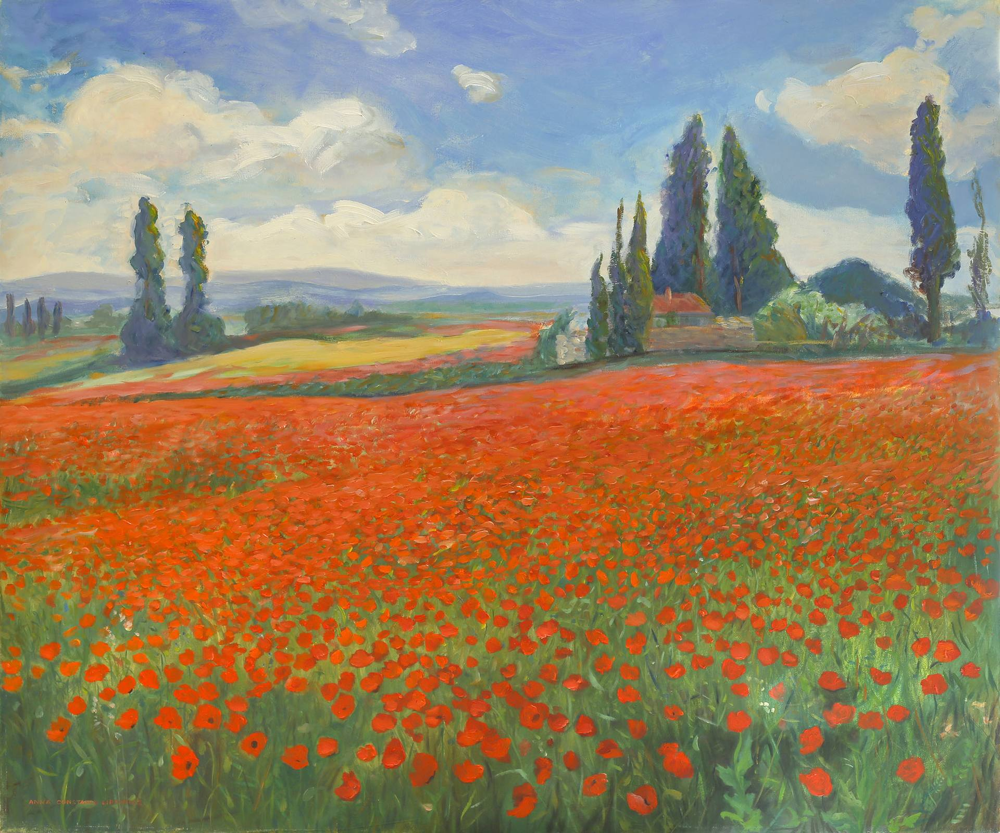

Привіт!Я Анастасія Челій — художниця, яка працює з кольором, формою та емоціями. Тут ви знайдете мої роботи, дізнаєтесь більше про мій творчий шлях і зможете легко зі мною зв'язатися.
Я — художниця з Луцька, яка працює в напрямах: живопис, ілюстрація та експериментальні техніки.
Маю художню освіту та досвід участі у творчих проєктах і виставках. У своїх роботах я досліджую теми людини, настрою, внутрішнього стану та взаємодії з навколишнім світом.
Мені близькі як класичні підходи, так і сучасні візуальні рішення.